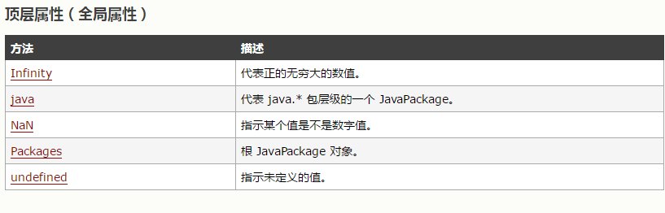
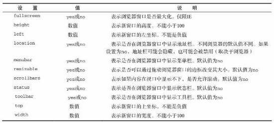

分享人：高雪峰
目录
1.背景介绍
2.知识剖析
3.常见问题
4.解决方案
5.编码实战
6.扩展思考
7.参考文献
8.更多讨论
Browser Object Model，浏览器对象模型，简称BOM，是JavaScript在使用过程中极其重要的组成部分，也是在浏览器实现JavaScript的核心。多年来，BOM缺少一个比较统一的标准，基本上都是各大浏览器提供商各自为政，对其进行扩展补充。W3C为了把浏览器中的JavaScript最基本部分标准化，已经将BOM的主要方面纳入到了HTML5标准中。接下啦，我们来认识一下它。
BOM，浏览器对象模型。其核心对象是window，它表示浏览器的一个实例。在浏览器中，window对象有双重的角色，它既是通过JavaScript访问浏览器窗口的一个接口，又是ECMAScript规定的Global对象，这意味着在网页中定义的任何一个对象、变量、函数，都以window作为其Global对象，因此有权访问parseInt()等方法。它包含的对象有：window对象、location对象、screen对象、history对象等。
window对象作为ECMAScript规定的Global对象，所有在全局作用域中声明的变量、函数都会变成window对象的属性和方法。但使用var定义全局变量，和直接使用window对象定义全局属性，也存在细微的差别：全局变量不能通过delete操作符删除，而window定义的属性可以。
var name = '大娃';
function sayName(){
alert(this.name);
}
alert(window.name);
sayName();
window.sayName();
//delete删除变量的演示 IE8之前对window使用方法会抛出错误
var age = 28;
window.color = 'red';
delete window.age;
delete window.color;
console.log(window.age);
console.log(window.color);
top、parent、self都是window对象的属性。
top: 其始终指向最高（最外）层的框架，也就是浏览器窗口。
parent：其始终指向当前框架的直接上层框架。
self：其始终指向window。这里的window就同self的本意一样，指的是当前window，不是浏览器窗口。
4. 资源合并与压缩：在引入外部js、css文件时，想办法减少js、css文件的数量，将多个js或者css文件可能地进行合并。使用框架的js时，选择min版来引入，不使用完整版。提高css代码的复用性等。使用一些压缩工具对其大小进行压缩。
window对象的位置的属性和方法很多。原因就像开场的时候介绍的那样，起初由于各浏览器提供商的各自为政导致的。抄录一段红宝书中的话：
IE、Safari、Opera 和Chrome都提供了screenLeft和screenTop属性，分别用于表示窗口相对于屏幕左边和上边的位置。Firefox则在screenX和screenY属性定义了相同的窗口位置信息，Safari、Chrome同时支持这两个属性。Opera虽然支持这两个属性，但是与screenLeft和screenTop属性并不对应。
var leftPos = (typeof window.screenLeft == 'number') ? window.screenLeft : window.screenX;
var topPos = (typeof window.screenTop == 'number') ? window.screenTop : window.screenY;
窗口大小的属性，各大浏览器供应商还是比较一致的（IE9+）。目前有四个属性：innerWidth、innerHeight、outerWidth和outerHeight。innerWidth、innerHeight表示该容器中页面视图的大小（减去边框的宽度）。outerWidth、outerHeight表示浏览器窗口本身的尺寸（无论是从最外层的window对象还是从某个框架访问）。在Chrome中，会返回同样的值，表示视口（viewport）大小而非浏览器窗口大小。
在各浏览器中，使用document.documentElement.clientWidth和document.documentElement.clientHeight保存页面的视口信息。IE6混杂模式下，需通过document.body.clientWidth和document.body.clientHeight获取相同的信息。
使用window.open()方法既可以导航到一个特定的URL，也可以打开一个新的浏览器窗口。这个方法接收4个参数:要加载的URL、窗口目标、一个特性字符串以及一个表示新页面是否取代浏览器历史记录中当前加载页面的布尔值。使用window.close()方法自动关闭窗口，不常使用。
通常只需传递第一个参数，最后一个参数只在不打开新窗口的情况下使用。传递了第二个参数，该参数可以已有窗口或者框架的名称，也可以是_self、_parent、_top、_blank。若不存在第二个参数的名称，则等同于设置_blank,即打开新窗口。第三个参数是一个逗号分隔的设置字符串，表示在新窗口中都显示哪些特性。
document.onclick = function(){
//在新窗口中打开高度为500，宽度为500，纵坐标为0，横坐标为200的qq网页
window.open("http://qq.com","_blank","height=500,width=500,top=0,left=200")
}
问题: 如何显示不同的对话框信息？
浏览器通过alert()、confirm()、prompt()、print()方法来调用系统对话框向用户显示信息。通过这三个方法打开的对话框都是同步和模态的，也就是说显示这些对话框的时候代码会停止执行，而关掉这些对话框后代码又会恢复执行。
alert()：接收一个字符串并将其显示给用户。
confirm()：接收一个字符串，并将其显示给用户。返回的布尔值:true表示单击OK，false表示单击Cancel或者右上角的关闭按钮。
alert(Hello World!);
confirm("Are you sure?");
prompt()：接收两个参数，要显示给用户的文本提示和文本输入域的默认值(可以是一个空字符串)。如果用户单击了OK按钮，则返回文本输入域的值；如果用户单击了Cancel或者右上角的关闭按钮，则该方法返回null。
print()：打印对话框是异步显示的，能够将控制权立即交还给脚本。
prompt("What is your name?" ,"Mike");
print(this);
参看上边简单的demo演示，暂无更多demo！
问题: _self、_parent、_top、_blank的区别？
target="_blank"，将链接的内容打开在新的浏览器窗口中；
_self，是指在本身这个网页窗口来打开新的网页链接；
_parent表示父窗口进行新的网页跳转；
_top表示整页窗口进行新的网页跳转。
参考一：JavaScript高级程序设计
参考二: BOM之window对象
参考四：BOM window对象方法
讨论点：大家对于window对象还有哪些认识，分享一下？
感谢大家观看
BY : 沁修 | 高雪峰